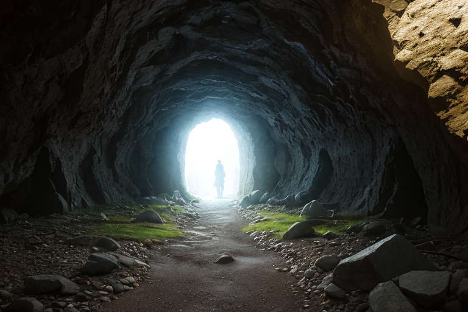
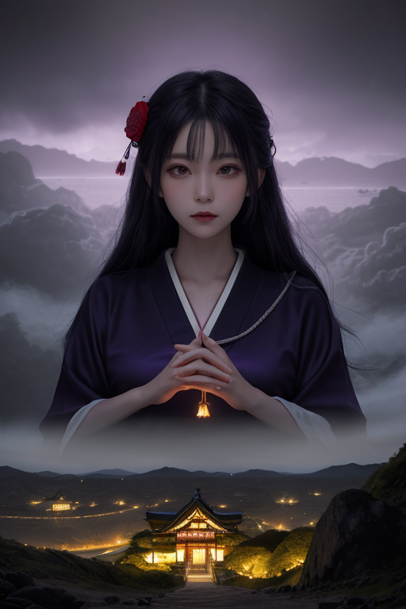
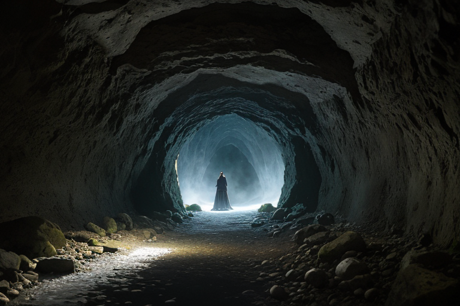
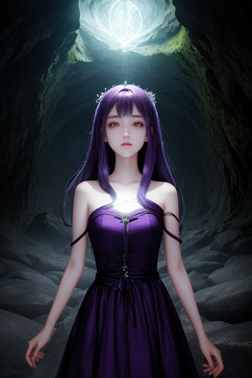
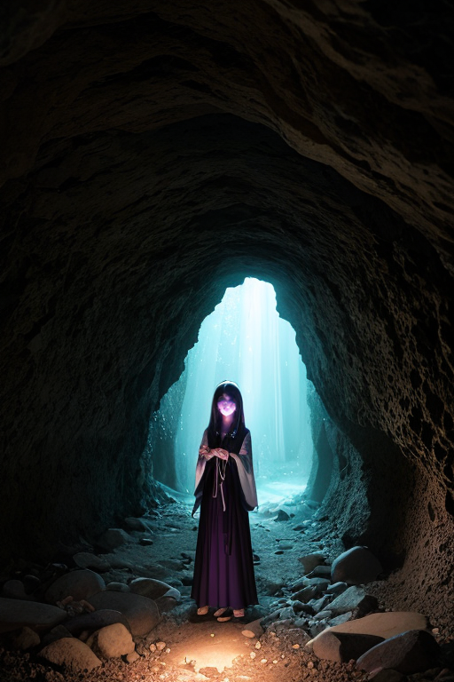

第一章「現実の島根」
あなたはまだ気づいていない。この土地にも、王がいることを。
石見銀山の坑道は、深い闇と静寂を抱えている。世界を動かした銀の脈は枯れ、今は観光客のささやきが岩肌に吸い込まれるだけだ。しかし、ここには「歴史が動いた」という事実以上のものが、微かに残留している。鉱脈の歪み、坑夫たちの無念、貿易によって結ばれた遠い異国との縁。それらはすべて、この土地の地層に織り込まれた見えない糸のようなものだ。
紫と金の勾玉を胸にした王、イズモリア・ミスティカは、その坑道の最深部に立っていた。彼の目には、過去から現在へと連なる無数の「縁の糸」が、微かな光の帯として映っている。銀山開発という歴史の大きなうねりは、もはや調整の対象ではない。彼が今、指先でそっと触れているのは、ごく最近できた、微小な地盤のひずみだ。次の地震の際、このひずみが坑道の一部を崩落させるかもしれない。彼はその糸を、ほんの少し、別の岩盤へとそっと誘導する。
必然か偶然か。彼は問わない。ただ、今ここにある縁（いと）を、未来へと紡ぎ直す役目を担っている。

第二章 歪みの兆候
石見銀山の坑道を抜けた歪みの波は、地中を伝い、やがて日本海の荒波へと消えていった。イズモリアは松江城の天守に立ち、城下町を見下ろす。観光客のざわめき、生活の息づかい。そのすべてが、無数の「縁の糸」によって編まれているのが見える。
彼の目に映るのは、一本、ごく細い糸だ。それは城下の老舗そば屋の店主と、遠く離れた都市で働く一人息子を結んでいる。店主は近く引退し、店を畳むことを考えている。その決断が、この土地の「味」という小さな文化の断片を、消滅させる一因となるかもしれない。それは歴史という大きなうねりから見れば、取るに足らない些事だ。
しかしイズモリアは、その糸に指を触れた。店主が迷っているその思いに、ほんの少しの「縁」を添える。たまたま目に留まる県外の雑誌記事、ふと訪ねてくる旧友の何気ない言葉。それらが店主の心を、ほんの少しだけ「継ぐ」方向へ傾けるかもしれない。
必然か偶然か。彼はただ、今、ここにある結び目の解けかたを、ほんの少しだけ緩やかにする。

第三章 王の葛藤
石見銀山の坑道は、深い闇と歴史の重みを湛えていた。イズモリアはその入口に立ち、地底から立ち上る「変革の波」を感じ取る。世界遺産登録という大きなうねりが、この土地の静かな縁の流れを変えようとしていた。観光客の増加は経済的な縁をもたらすが、同時に古くからの共同体の絆、細やかな人間関係の糸を緩め、あるいは切るかもしれない。
「止めるべきか、促すべきか」
彼の内側で、二つの声がせめぎ合った。神話の時代から続くこの地の「静かな縁」を守るべきか。それとも、新たな時代との「強い縁」を結ばせるべきか。彼は感情を持たぬ存在として設計された。しかし、島根の濃密な「縁」の感情は、彼の判断に逡巡という影を落とす。
ミスティラが傍らに現れ、囁く。「全ての縁は、結ばれればいつか解ける定め。王たるもの、その結び目が『今』どうあるべきかを見定めるのみ」
イズモリアは目を閉じた。彼の役割は歴史の流れを止めることではない。ただ、その流れがこの土地の、人々の心を引き裂くような急流とならないよう、ほんの少し、水脈を調整することだ。彼は深く息を吸い、坑道の闇に向かって手を伸ばした。変革の波そのものを止めるのではなく、その波が地元の人々の生活に届く速度を、ほんの少しだけ緩めることに決めた。

第四章 妖精との対話
「王よ、あなたの逡巡は、この地の『縁』そのものを問うています」
ミスティラが、石見銀山の坑道口に立つイズモリアの傍らに静かに現れた。彼女の声は、坑道の奥から湧き上がる冷気のように、透明で冷たかった。
「ここで掘り出される銀は、世界とこの列島を結ぶ『縁』です。それは戦国の世を変え、人々の運命を激しく書き換える。必然の流れです」
イズモリアは目を開けず、地中を流れる変革の「縁波」を感じ続けていた。あまりに巨大な力。それは確かに歴史を前に進めるが、その代償として、多くの小さな暮らしの糸を切ってしまう恐れがあった。
「しかし、王よ」ミスティラが続けた。「すべての縁が、優しい結び目だけである必要はありません。時には、古いものを断ち切る縁も必要です。私たちにできることは、その切断が無慈悲な『偶然』の暴力とならないよう、ほんの少し、『必然』として受け入れられる時間を紡ぐこと。ただ、それだけです」
イズモリアは頷いた。彼が操作できるのは、運命の質そのものではなく、その運命が人々の心に届く「間」だけなのだ。

第五章 微調整と余韻
石見銀山の坑道は、深い闇と静寂に包まれていた。イズモリアは、岩盤に蓄積された巨大な歪みを感じ取っていた。これは自然の摂理であり、止めることはできない。彼に許されたのは、崩落のタイミングを、ほんの一呼吸、遅らせることだけだった。
その日、坑内には新しい採掘班が入坑する予定だった。しかし、縁王は、ベテランの班長と新参者の若者との間に、ほんの些細な「縁」のずれを生じさせた。忘れ物、道案内の誤解、ほんの数分の齟齬。その結果、予定時刻に坑内に入っていたのは、経験豊富な班長ただ一人となった。
岩盤が軋み、崩れ落ちた。轟音が坑道を満たす。班長は、長年の勘で間一髪、命拾いした。彼は無事だったが、その顔には、仲間を危険に晒さなかった安堵と、なぜ自分だけがこの時間にここにいたのかという深い疑念が入り混じっていた。
イズモリアは、紫と金の勾玉の輝きを少しだけ褪せさせながら、その光景を見つめた。彼は一人の命を繋いだ代償に、もう一つの可能性の縁――若者たちがこの災害を共に経験し、将来より深い信頼で結ばれるかもしれない縁――を静かに断ち切った。必然か偶然か。答えは、彼にもわからない。ただ、調整の余韻だけが、神話の国に深く沈んでいく。
あなたの町にも、王がいる。